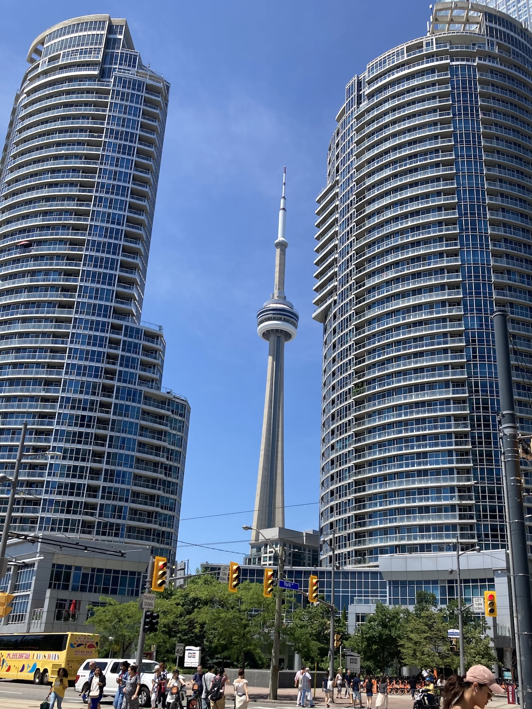
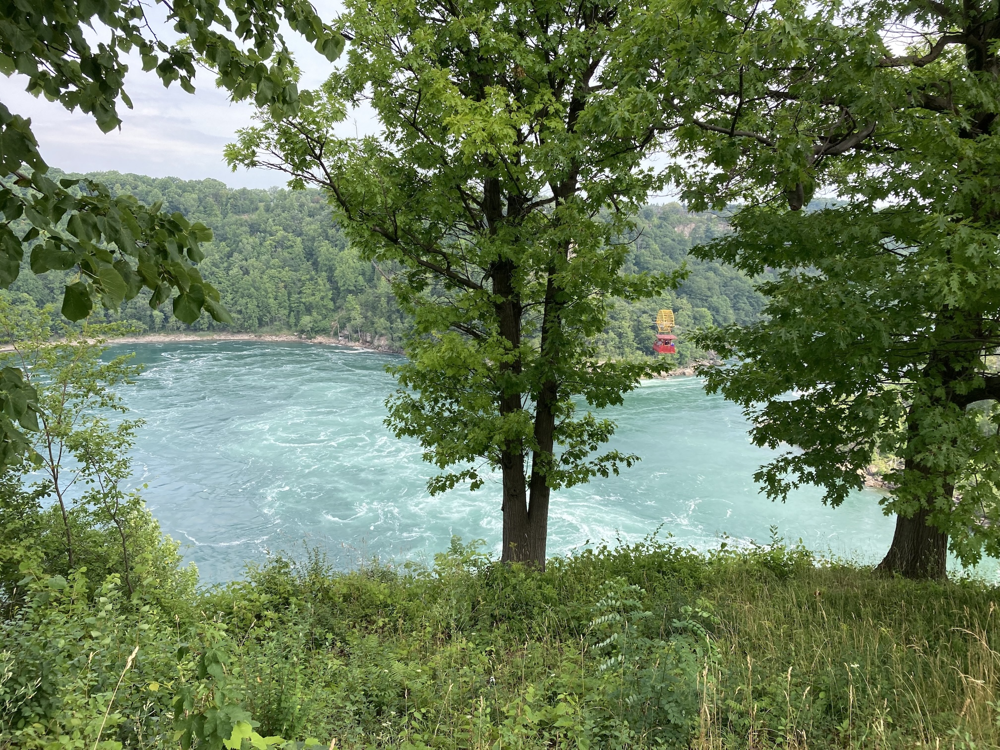
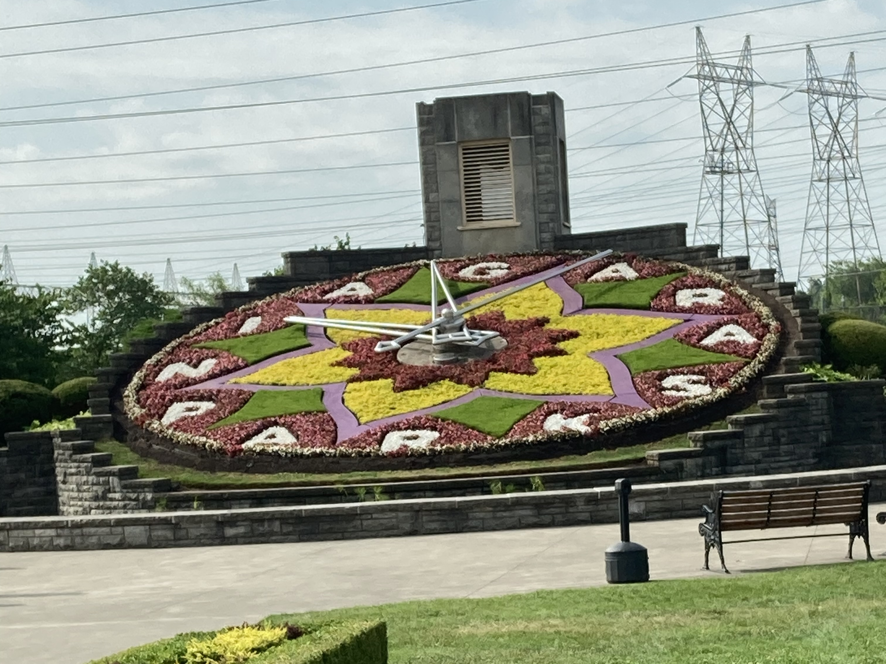
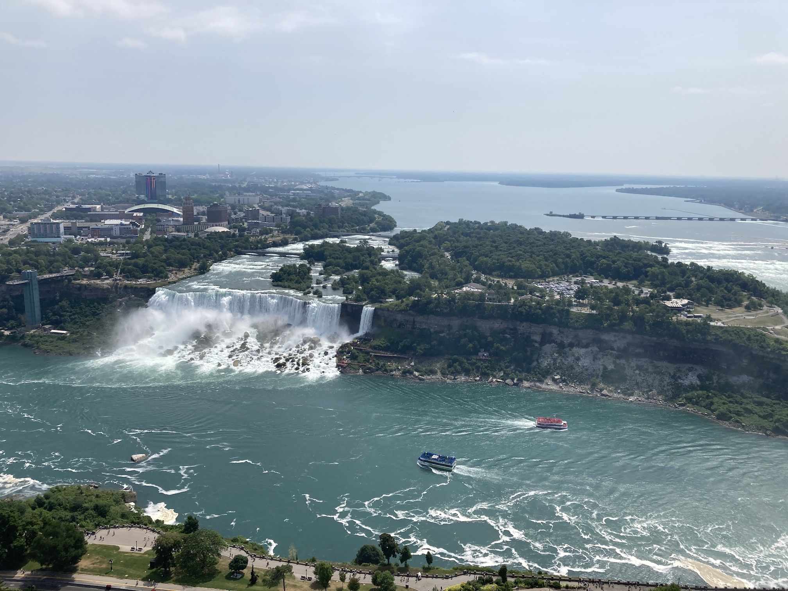
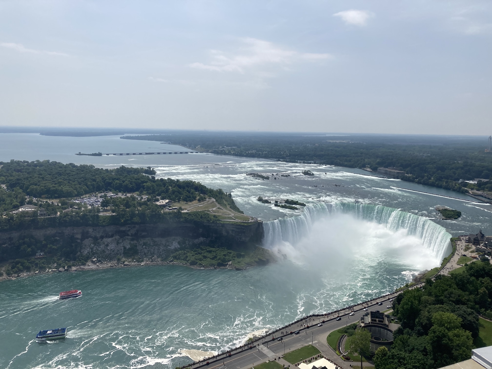
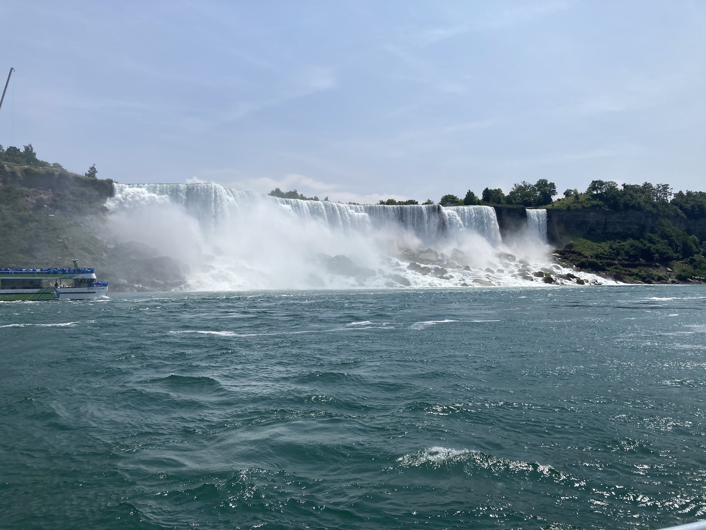
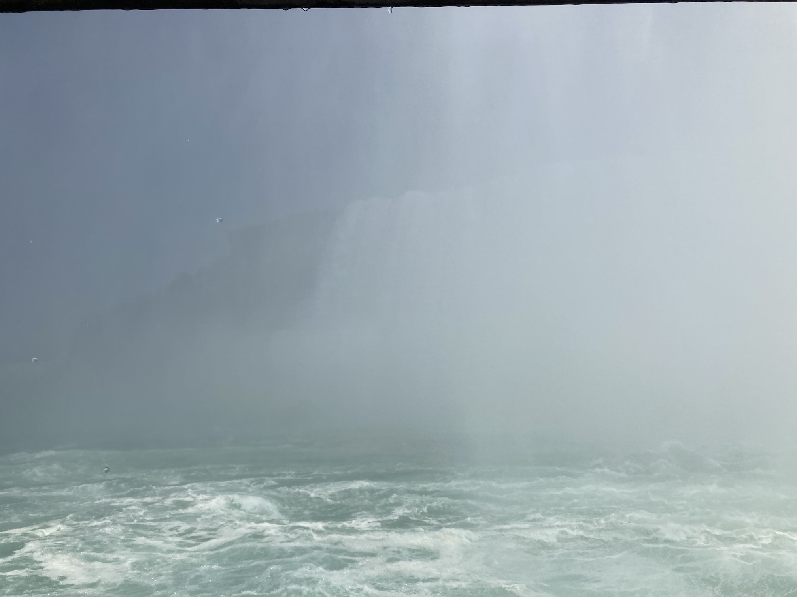
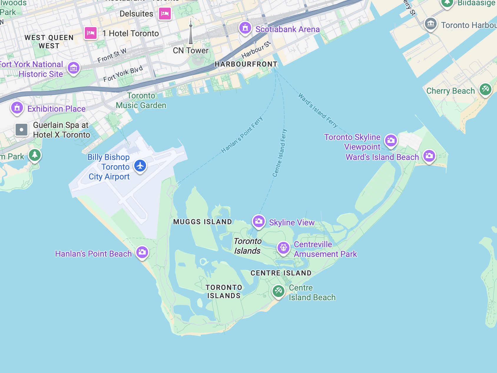

Having stayed in a hotel at Gatwick overnight, we were up early on Tuesday 22nd July 2025 to check our cases and print our boarding cards. Then we went back to the hotel to have breakfast, before returning to the North Terminal to go through security. Before long we boarded the plane and, after an eight hour flight landed in Toronto.
Getting through passport control and customs was very easy and quick. However, our attempt to take the UP Express to Downtown Toronto got off to a false start since I'd not realised that the monorail was just a local 'back and forth' shuttle and we needed to get off at Terminal 1 (we had arrived at Terminal 3) and get on the UP (Union to Pearson Express). Having finally reached Union station we bought tickets for the subway (metro) and travelled to the station nearest our hotel.
We found that we had been given a small suit! However, when we tried to use the coffee machine it spurted grounds all over the counter top and me. We were shown how to use the machine without that happening (we had followed what it said on the capsule) and we were given a kettle, more our level of kitchen technology.
After quite a good night's sleep we were up reasonably early, showered and had breakfast before setting off for Union Station. It was already hot, but we walked, if only to see how long it took. Too long in that heat, even though we walked mainly in the shade.
We started by going in to the Tourist Information centre, where we got a map and details of the city bus tours and the ferry timetable. We then walked through to where we would be picking up the bus to Niagara Falls in the morning. We also bought tickets for the Toronto city bus tour. The first bus that came along was full, so we decided to take a walk and get on the bus at another stop, which we did. Since the tour took two hours, we had thought of getting off somewhere and catching the next (or another) bus, but it was too early to stop for lunch when we came to the most promising area. So we stayed on for the whole tour, plus another couple of stops. We then took a walk around Queens Harbour before walking back to Union Station and getting the subway back to the station near the hotel.
It seems that new buildings in downtown Toronto cannot be 'square' and must be different to existing buildings. However, the CN Tower dominates the skyline.
Thursday 24th was another early start and another busy day, although we spent most of it sitting down. We were first into breakfast at 6:30 and then got to the bus pick-up point by the aquarium (via subway and walking) by about 7:30. There was some confusion over which bus we were on, since none of them said "Chariots of Fire", the company through which we had booked the tour to Niagara Falls. However, the driver of the first bus had us on his list. The two drivers seemed confused as well over who was where, but they sorted it out and we were away by then past eight. We had paid the driver for the boat trip.
It's a long drive to Niagara Falls from Toronto, particularly with the heavy traffic. The driver gave an almost continuous commentary, it seemed sometimes at the expense of driving! When we arrived we had a quick stop at the floral clock and then at an 'outlet' to sample maple syrup, before briefly stopping above the 'whirlpool' to take a photo and then going on to the Skylon Tower. This wasn't on our original itinerary, but we bought tickets from the driver and went up it. The view from the top was very good.
   The photo on the left is the 'American Falls' and that on the right is the 'Horseshoe Falls' (in Canada).
Then to the boat! Following a long queue (which actually moved quite quickly) we got on the boat and moved to the front, on the lower deck. It was very windy and in our red plastic macs it was difficult to do anything. However, all was well as we passed the American falls, but as we approached the Horseshoe falls the spray was so violent that we couldn't see anything and got very wet. We moved further back under some shelter, but it was really a waste of time.
 The photo on the left is the 'American Falls' taken from the boat and that on the right is all that we could see of the 'Horseshoe Falls'!
With very wet arms we went up to the town to find something to eat. This was not easy since there were long queues everywhere. Eventually we found an Appelby's and had two starters, which was too much for us. Niagara Falls is like Blackpool on steroids; not at all our style. Then it was the long trek back to Toronto on the bus.
Was it worth it? Really only to say that you had seen the falls.
On Friday, our last day in Toronto we had a later start and walked down Yonge Street to the harbour where we caught the ferry to Toronto Island. We had to wait half an hour before taking the 15 minute sail to Wards Island and then walked along to the Centre Island, stopping for coffee en route. We also had a slight diversion on to one of the other islands, which was mainly residential. The photo of the Toronto skyline at the top of this page was taken from Toronto Island.
We stopped for lunch (fish and chips) before catching the ferry back to the harbour. After a sit down with an ice cream cone we went in search of the Toronto PATH. It took a while, but then we found lots of underground tunnels, shopping areas and food courts. We walked all the way to Dundas (about 600m from our hotel) and emerged on to the street. It was a pity that we then turned the wrong way! Eventually we got back to the hotel.
| Return to Canada &: USA | © David James 2025 Last updated: 29th August 2025 |